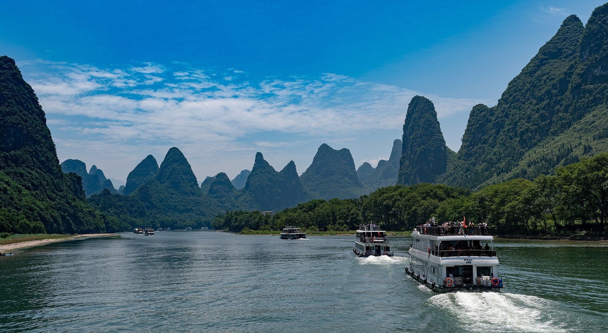

山水照片暂时无法显示
山海之间，自有答案
把日子，
把日子，
交给山海。
走进山野，听见海风。
在熟悉的中国，遇见不一样的自己。
旅行灵感
镜头里的中国广西 · 桂林
LESS HURRY. MORE WONDER.山川湖海，慢慢相见
FIND YOUR NEXT CHAPTER
下一站，去哪儿？
每一种风景，都有值得停留的理由。
还没找到这一站
试试「云南」「雪山」或「海岸」，也可以清空条件重新看看。
A JOURNEY, AT YOUR PACE
不赶路，好好旅行好风景，串成一段好旅程
精选 4 条旅行路线，留一点时间，给路上的惊喜。
路线为自主旅行灵感，天数可按你的节奏调整。
NOTES FROM THE ROAD
给旅途一点灵感出发之前，读一点旅行
关于准备，关于慢游，也关于和世界相处的方式。
世界很大，不妨慢慢走。
找到我的下一站